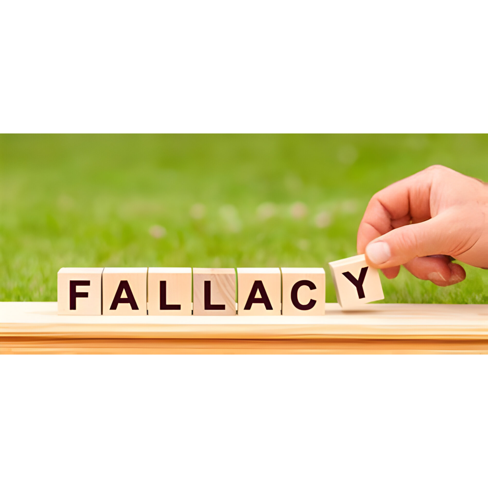

|  | HOME | SIGN UP | THE FALLACIES |
|---|
We open people's perspectives |
| Affirming the Consequent: A → B, B, therefore A. | Denying the Antecedent: A → B, not A, therefore not B. | Fallacy of Four Terms: An argument with four terms in it instead of the required three. |
|
Fallacies are errors in reasoning that can make an argument or line of thought appear convincing or persuasive when, in fact, it is not logically sound. Fallacies can be categorized into various types based on their nature and how they lead to faulty reasoning. Here are some common fallacies and their definitions:
This fallacy occurs when someone attacks the character or personal qualities of an individual making an argument rather than addressing the argument itself.
The straw man fallacy involves misrepresenting or distorting an opponent's argument to make it easier to attack. Instead of addressing the actual argument, a weaker or distorted version is targeted.
This fallacy relies on the authority or status of a person or source rather than the strength of the actual argument. Just because an authority figure says something doesn't necessarily make it true.
A false dilemma occurs when an argument presents a situation as having only two possible outcomes or choices, when in reality there are more options or nuances to consider.
This fallacy suggests that taking a specific action will inevitably lead to a chain of negative consequences, often without sufficient evidence to support such a claim.
Circular reasoning happens when the conclusion of an argument is assumed in one of the premises, essentially restating the same thing in different words without providing any new evidence or support.
This fallacy occurs when someone argues that a claim is true simply because it hasn't been proven false (or vice versa). Lack of evidence for or against a claim doesn't necessarily prove its validity or invalidity.
A hasty generalization is made when a conclusion is drawn from limited or insufficient evidence. It involves making a broad statement or generalization based on a small or unrepresentative sample.
This fallacy involves diverting attention away from the main topic or argument by introducing an unrelated or irrelevant issue.
The post hoc fallacy suggests that if one event follows another in time, the first event must have caused the second event. Correlation does not imply causation.
An appeal to emotion involves using emotional manipulation or appeals (such as fear, pity, or sympathy) to support an argument rather than relying on logical reasoning.
The composition fallacy assumes that what is true for the parts is also true for the whole, while the division fallacy assumes that what is true for the whole is also true for its parts. Both can lead to erroneous conclusions.
These are just some of the many fallacies that can occur in arguments and reasoning. Identifying and understanding fallacies is important for critical thinking and constructing valid and sound arguments.